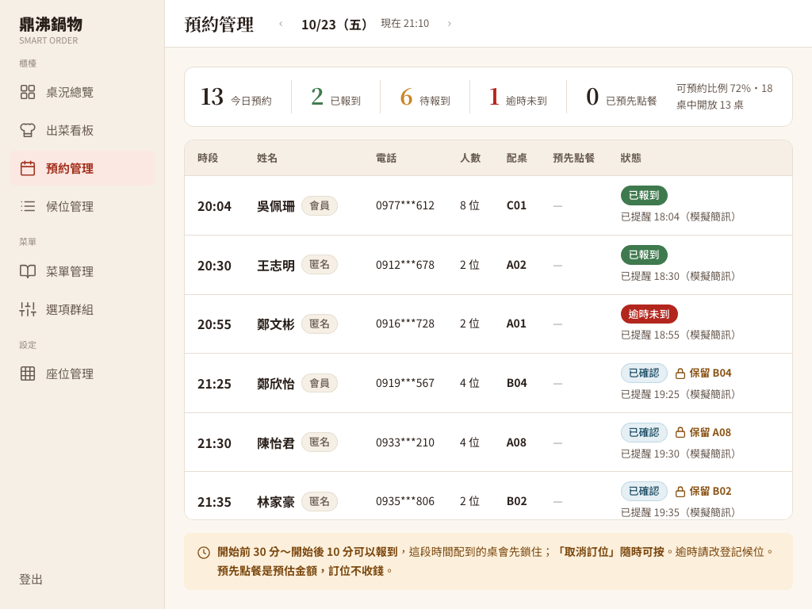

一個規格不符、一個沒做完的功能、一個版面問題
1. 客人想訂明天 18:15，卻拿到 400
M7（規格文件的訂位模組）7.1 寫「任意時間預約、非固定時段」，並否決過固定時段（18:15 想來的客人只能選 18:00 或 18:30）。正確的模型是存「開始時間」與「結束時間」，用區間重疊判斷能不能訂。資料模型和重疊檢查都已照做，只剩建立訂位的檢查還在要求半小時整點。
修正前
四個人訂明天 18:15，店裡那時有空桌、也沒有和別的訂位重疊，送出卻回 400 錯誤：系統只接受 11:30、12:00、12:30……這種半小時整點。
修正後
3 天後的 18:15、11:30、20:00、13:07 都回 201（建立成功），資料庫存的就是送出的時間（18:15:00）。
2. 提醒只寫 log，跑兩次就寫兩次
M7 7.12 要求「用餐前 2 小時發通知」。原本的排程每 15 分鐘跑一次，找出接下來要開始的訂位，寫一行 log 就結束：沒有記錄寄過沒有，下一次排程又寫一次；店長手動觸發回傳的數字也只是 log 行數。這是規格有、原本沒做完的功能，整合時補上，不算原作者的缺失。
3. 預約管理頁在 1024 像素寬被撐出橫向捲軸
規格要求店家端從 1024 像素寬開始支援，但預約管理頁的表格比畫面寬，整個後台被撐到 1219 像素。表格外面雖包了可捲動的框卻沒生效：後台右側內容欄是 flex 子元素，flex 子元素預設不會縮到比內容還窄（min-width: auto）。這是改動前就存在的問題，不是作者的缺失，因規格要求而一起修。
改「合法時間」的定義，不動重疊算法
任意時間訂位
- 可以訂的時間是最早開始到最晚開始（預設 11:30～20:00，頭尾都算）之間的任意一分鐘；其他規則不變（只能訂明天起 30 天內、人數、區間重疊、悲觀鎖）。
- 精確到分鐘：帶了秒或毫秒（例如 18:15:30）就拒絕，而不是默默改成 18:15，這樣存進去的值就是客人選的值。錯誤訊息說清楚，都是
400 VALIDATION_FAILED。 - 選時間頁仍提供半小時一格的「建議時段」（UI（User Interface，使用者介面）規格只有時段按鈕）；後端已不再限制，之後加自訂時間輸入不必再改後端。
提醒只寄一次（整合時補上）
- 記錄「什麼時候提醒過」：訂位表新增
reminder_sent_at。要提醒的條件是狀態已確認、還沒提醒過、開始時間在「現在」到「現在＋2 小時」之間。 - 用條件式更新搶，搶到的才寄：排程和店長手動觸發可能同時跑，如果先查「還沒提醒的」再寄，兩邊會查到同一筆、各寄一次。所以每一筆先執行這句：
UPDATE reservation SET reminder_sent_at = 現在 WHERE id = ? AND status = 'CONFIRMED' AND reminder_sent_at IS NULL
資料庫一次只讓一個人改這一列，先改的看到「影響 1 列」才寄，後到的看到「影響 0 列」就跳過；剛好被取消的訂位因為條件有status = 'CONFIRMED'也不會被寄到。 - 寧可漏寄，不要重複寄：寄送放在「搶到並存檔之後」，若程式剛好在寄之前當掉，那筆不會補寄。這是刻意的取捨，因為重複的提醒簡訊對客人更困擾。
- 模擬簡訊：專題沒串真的簡訊服務，比照會員驗證碼的做法，把提醒內容寫成一行 log，手機號碼中間遮起來（0912***678）；店家端預約管理頁在訂位下方顯示「已提醒 18:32（模擬簡訊）」。
- 取消時不能把提醒時間洗掉：取消、報到時程式會把整筆訂位寫回資料庫，讀進來的舊值（例如 NULL）可能蓋掉剛記下的提醒時間。所以
reminderSentAt設成 JPA 不寫入（insertable/updatable=false），只由上面那句條件式更新負責。
版面
在共用的後台版型 DashboardLayout 的內容欄加上 min-w-0，寬表格就在自己的框裡捲動，不再撐開整個後台。
數字與證據
- Git commit
f4430db（審查後小修afca18d）；規格文件同步d947275。HTTP（Hypertext Transfer Protocol，超文字傳輸協定）與資料庫檢查：訂位專項 21 項全部通過，另有基線 36 項。完整 HTTP 紀錄。 - 邊界：11:29、20:01、18:15:30（帶秒）、今天、31 天後都回 400；可訂時段查詢仍回 18 個建議時段。
- 提醒：用 SQL 放三筆訂位（90 分鐘後、180 分鐘後、60 分鐘後但已取消），同時送兩次手動提醒，回傳 1 和 0，合計只提醒一次（90 分鐘後那筆）；再送一次回 0；提醒後再取消，提醒時間仍保留；櫃檯身分觸發回 403（角色沒有權限）。升級腳本在舊結構、72 筆訂位的資料庫上執行，新欄位都是 NULL，舊資料不變。
- 瀏覽器 3 項全部通過：「已提醒」標示與 API（Application Programming Interface，應用程式介面）一致（9 筆）、1024 像素不溢出、沒有頁面錯誤；逐頁檢查 8 個後台頁面，在 1024 與 1440 像素都沒有整頁橫向捲軸。完整瀏覽器紀錄。
- 獨立高風險審查沒有 P1／P2，確認任意分鐘後的區間重疊、報到、取消期限與可訂時段剩餘桌數都正確，提醒去重在兩種隔離層級下都成立；3 個 P3 已修正（模擬簡訊改用店名「鼎沸鍋物」、設定檔註解更新、移除用不到的查詢）。審查另指出
min-w-0讓菜單管理表格在 1024 像素時右側兩欄要捲動才看得到，且捲軸被隱藏，這部分在 Clara 的菜單管理分支處理。


本篇真的用到的
- 時間區間模型與區間重疊檢查：判斷同一張桌能不能再接訂位，
ReservationService.java。 - 悲觀鎖（
SELECT ... FOR UPDATE）：建立訂位時鎖住所有坐得下的候選桌，ReservationService.java。 - 條件式 UPDATE（樂觀並發控制）與冪等：提醒去重，
ReservationRepository.java、ReservationJobService.java。 - Spring
@Scheduled排程、手動觸發 API、Clock注入的業務時鐘：ReservationScheduler.java、ReservationConfig.java。 - JPA 欄位
insertable/updatable=false：避免整列寫回蓋掉提醒時間，ReservationEntity.java。 - CSS flex 的
min-width: auto與 Tailwind 的min-w-0：DashboardLayout.tsx。 - 學到什麼：寫驗證規則時回頭對照規格的每一句話，避免舊設計的痕跡留在檢查裡；排程功能先問「跑兩次會不會重複」，並想清楚失敗時是「寧可漏」還是「寧可重複」。
新手名詞表
- M7
- 專案規格文件的第 7 個模組「訂位」（
docs/spec/modules/M7-訂位.md）。 - 區間重疊（interval overlap）
- 兩段時間只要「A 開始早於 B 結束，而且 B 開始早於 A 結束」就重疊。
- 悲觀鎖（pessimistic lock）
- 先假設會有人搶，所以讀資料時就鎖住，其他人要等鎖放開才能動同一筆。
- 條件式更新（conditional update）
- 在 UPDATE 的 WHERE 寫上「必須還是某個狀態」，資料庫告訴你改了幾列；改到 1 列代表你搶到了。
- 冪等（idempotent）
- 做一次或做很多次，結果都一樣；排程最好設計成冪等。
- JPA（Java Persistence API，Java 持久化 API）
- Java 用物件讀寫資料庫的標準介面。
- Clock（時鐘注入）
- 把「現在幾點」包成可替換的物件，程式統一跟它問時間，時區一致，也方便測試。
- migration（資料庫升級腳本）
- 把正在使用的資料庫升級成新結構的一次性腳本。
- flex 與 min-w-0
- flex 是 CSS 的排版方式；子元素預設最小寬度等於內容寬度，加上
min-w-0（min-width: 0）才允許縮小。